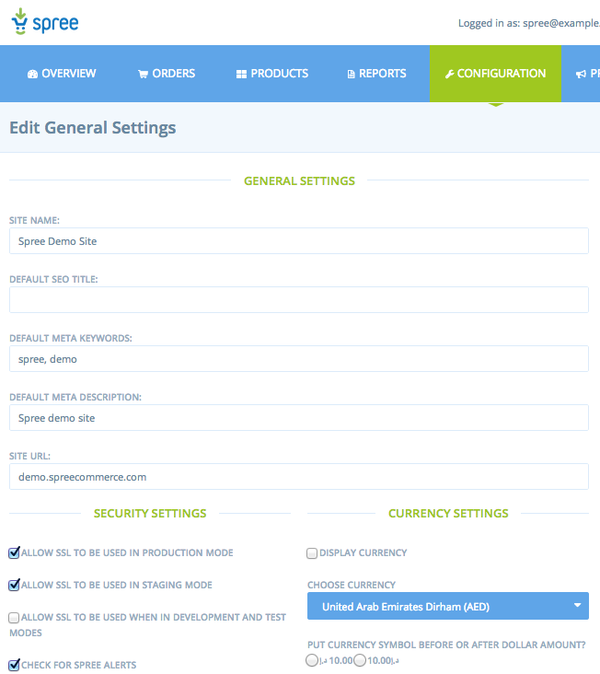
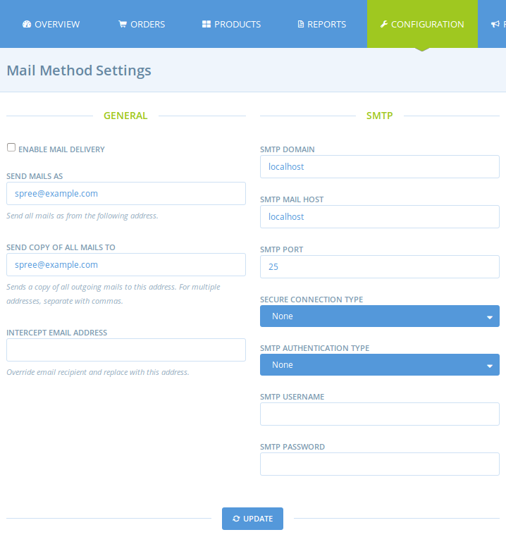

This guide is intended to provide some generally useful hints and tips\ for troubleshooting standard deployment issues, including:
- How static assets are served in production
- Enabling & Configuringn SSL use within Spree
- Email configuration
- and more …
Serving Static Assets
Rails applications (including Spree) use the convention of storing
public assets (images, JavaScripts, stylesheets, etc.) in a directory
named public. In development environments, Rails itself will
automatically handle requests for this static content by serving it from
the public directory. In production mode, however, Rails is not
configured to serve public assets unless specifically enabled. This
leaves you with two options.
Configure Rails to Serve Public Assets
Rails has a config.serve_static_assets setting that allows you to
override its default behavior in the production environment. If you want
Rails to serve you public assets you will need to change this setting in
config/environments/production.rb of your Rails app as follows:
config.serve_static_assets = true
There is a good reason why this is disabled by default in Rails which is that Rails is not a general purpose web server. Servers such as Apache and Nginx are optimized for rapidly serving up static content. You should consider the advice of the Rails core team and let your webserver do what it does best (as described in the next section.)
Configure the Web Server to Use the public Directory
The recommended approach for handling static assets is to allow your web
server to handle serving these files. If you want to follow this
approach just make sure that it’s configured properly in the
config/environments/production.rb of your Rails app.
config.serve_static_assets = false
This is the default setting of Rails so it’s also fine if this setting is missing or commented out.
The following is an example of how to configure Apache so that its document root is pointing to the public folder.
<VirtualHost *:80> ServerName www.mystore.com DocumentRoot /webapps/mystore/public <Directory /webapps/mystore/public> Allow from all Options ~~MultiViews </Directory> </VirtualHost>
Each web server will have its own method for doing this so please consult the appropriate documentation for more details.
Enabling SSL
Spree supports SSL and contains a special filter to require SSL for certain sensitive pages It also has the ability to redirect SSL requests that do not require SSL back to standard unencrypted HTTP. The code for this is built right into Spree and is based on the ssl_requirement by David Heinemeier Hansson.
The default behavior for Spree depends on the Rails environment as follows:
| *.Environment | *.SSL Enabled |
|---|---|
| Development | False |
| Test | False |
| Staging | True |
| Production | True |
The “staging” environment is not one of the default environments created by Rails. However, many developers use a staging environment, which generally should mimic the production environment as much as possible. You may, however, make minor changes such as disabling email or sending email to a test account instead of the designated recipient.
SSL Preferences
SSL behavior in Spree is determined by several different preferences.
| *.Preference | *.Default Value |
|---|---|
| allow_ssl_in_production | true |
| allow_ssl_in_staging | true |
| allow_ssl_in_development_and_test | false |
For more information on preferences in general you may wish to read the Preference Guide.
Changing the Default Settings
If you do not wish to use SSL in production or staging, or if you wish to enable SSL in development mode, you will have to change the :allow_ssl_in_production configuration setting. This can be done via the admin interface as shown below:

If you need to change any of the above default settings, it is also
recommended to fix the setting in an initializer . In
/config/initializers/spree.rb, add a line such as:
config.allow_ssl_in_staging = false
Configuring Email Options
Mail delivery in Spree is disabled by default. You can enable it in two ways.
First, if you need to keep your default Rails app action mailer configs you need to tell Spree to not override them by setting the override_actionmailer_config option to false. You should also tell Spree which email should go on the header from using the mails_from option. A typical spree initializer which disables all Spree default mail settings and interceptor looks like this:
Spree.config do |config| config.override_actionmailer_config = false config.mails_from = "no-reply@yourdomain.com" end
Secondly, in case you want to use Spree admin UI or config options via initializer to properly enable email delivery, you need to provide valid SMTP information. This includes the following (spree config options goes along):
- SMTP Domain (mail_domain, defaults to localhost)
- SMTP Mail Host (mail_host, defaults to localhost)
- SMTP Port (mail_port, defaults to 25)
- Secure Connection Type (secure_connection_type, defaults to None)
- SMTP Authentication Type (mail_auth_type, defaults to None)
- SMTP Username (smtp_username, defaults to nil)
- SMTP Password (smtp_password, defaults to nil)
Those can be updated either by an usual spree initializer block or through admin UI. You could set them as per environment as well. e.g.
Spree.config do |config| if Rails.env.production? config.mail_port = 1025 # other configs .. else config.mail_port = 25 # other configs .. end end
Regardless of whether you decide to configure ActionMailer via the admin
UI or an initializer, you may decide that while you need to have mail
capabilities for other parts of your app, you don’t want to send Spree’s
default email notifications (e.g. order confirmation). This may be the
case if you use a transactional email service like Mandrill for such
notifications but you require regular ActionMailer capabilities for
other parts of your app. If this is the case you can change the default
true value for the send_core_emails config to false.
The default override_actionmailer_config value also gives you the chance
to set bcc headers for all spree outgoing emails and to intercept them and
reroute to someone else. This could come in handy on staging servers since
it prevents the store from accidentally sending emails to a real world
customer when testing operations such as canceling an order or marking it
shipped. At last you need to set enable_mail_delivery = true
as it defaults to false. e.g.
Spree.config do |config| config.enable_mail_delivery = true config.mail_bcc = "staff@yourstore.com" if Rails.env.staging? config.intercept_email = "testing@yourstore.com" end end
Both smtp and inteceptor configs listed above can be found on the mail section
in the configuration tab. Note that the Mail Method Setting link will not
be displayed if override_actionmailer_config is false.

It’s generally considered a bad idea to send email on the same “thread” as a web request. Many web applications manage to get by doing this but high volume stores should consider using standard Rails techniques such as Delayed Job for handling email delivery as a separate process.
Performance Tips
Running in Production Mode
If you are noticing that Spree seems to be running slowly you should make sure that you are running in “production mode.” You can start your server in production mode as follows:
$ bundle exec rails server -e production
Please consult your web server documentation for more details on enabling production mode for your particular web server.
Passenger Timeout
If you are running on Passenger then you may be noticing that the first request to your Spree application is very slow if the application has been idle for some time (or you have just restarted.) Consider changing the PassengerPoolIdleTime as described in the Passenger documentation.
Caching
Most stores spend a lot of time serving up the same pages over and over again. In many cases, the content being served is exactly identical or nearly identical for every user. In such cases, a caching solution may be appropriate and can improve server performance by bypassing time consuming operations such as database access. Rails provides several excellent caching options that you should consider investigating.
A detailed description of Rails caching is beyond the scope of this guide.
The Spree core team is actively considering some form of basic caching support to make it easier to leverage the Rails caching options.